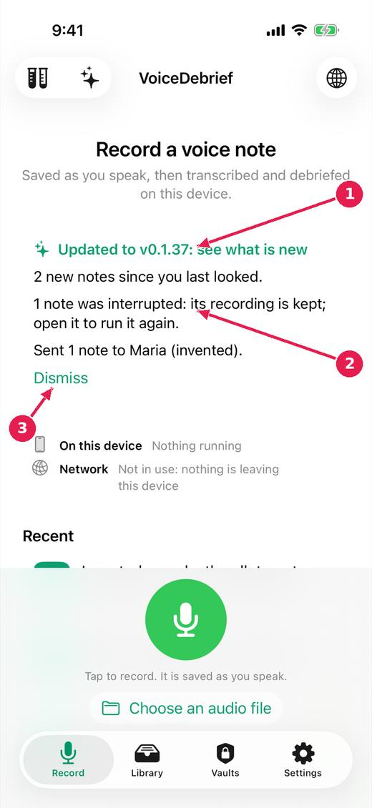

VoiceDebrief iOS / guides / briefing
What happened since you last looked
When you open the app, a card on the Record tab says what is new: an update, with a link to what changed, and what happened to your notes since you last opened it. The app works it out from the library; it is not written by a model. The Guide's What is new lists every version, with those you skipped marked.
Every guide · Ideas and where they stand
1. The briefing card on the Record tab.

- The app was updated: tap to see what is new in this version.
- What happened since you last looked: new notes, interrupted ones, sends and saves.
- Dismiss it. The card is worked out again each time the app opens.
Where this stands
- The version in plain sight, release notes worth reading, and a briefing on opening: In progress. The issue says: "Items 3 and 4 begun (untried on a device): the app notices an update and links its page; a briefing card says what happened since the last opening, worked out..."
Pictures: iPhone, light, from screens.yml run 39 on dev (commit 1d21781, 14 November 2026). Newer builds may differ: the record screen now chooses who a note is for above the record control.